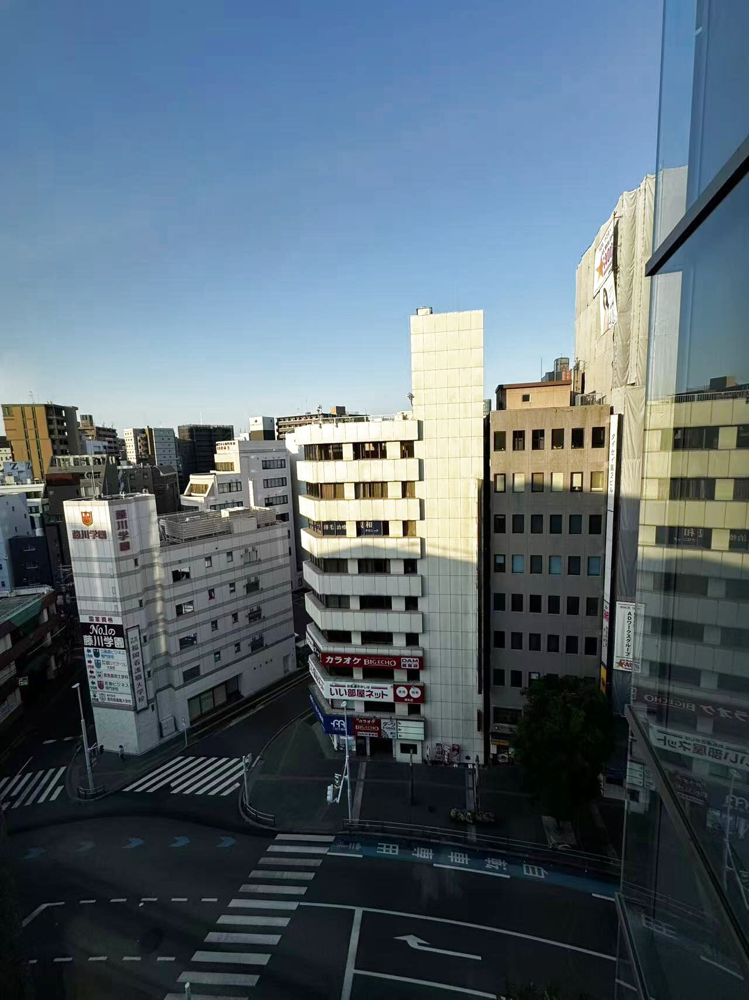
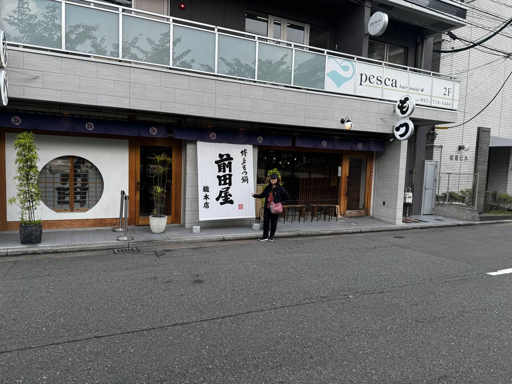
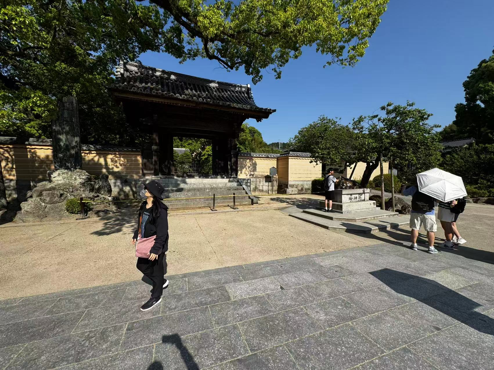

5 Days 4 Nights in Kyushu
從桃園到福岡，五天四夜的九州之旅
一趟說走就走的小旅行，從台北到福岡。在博多地下街吃一幸舍泡系拉麵、排隊買大福、逛OIOI百貨，最後以夜晚的大東園燒肉完美收尾。

陽光從窗簾縫隙透進來，喚醒了第二天在福岡的早晨。從太宰府天滿宮到博多運河城，滿滿的行程。
在陽光飯店的第三天早晨，雖然還是同一間餐廳，但今天換了個位子——窗外的風景完全不一樣了。

搭上火車前往六本松，文青小店和咖啡館的氛圍和博多市區很不一樣。晚上來一碗前田屋牛腸鍋。
福岡必吃的在地美味
はなおり — 博多水炊雞的經典老店，湯頭清甜鮮美，是福岡必訪的在地美味。
大東園燒肉、元祖牛腸鍋、排隊甜點，博多三大美食一次收錄。

中洲屋台、博多名物明太子、道地庶民美食體驗。
一蘭、一幸舍、ShinShin、博多雙星、元祖長崎蛋糕。